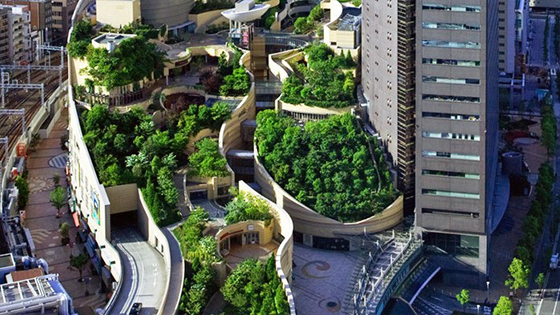

How to get here by Train [look down]
1. Nankai Railway Coporation
"Namba Station" center Exit, south exit direct connection
2. Subway Midosuji Line
Approximately 7 minutes on foot from "Namba Station"
south south wicket(for exclusive use of exit)
3. Subway Sennichimae Line
Approximately 8 minutes on foot from "Namba Station"
east wicket
4. Subway Yotsubashi Line
Approximately 9 minutes on foot from "Namba Station"
south wicket
5. Hanshin Namba Line
Approximately 9 minutes on foot from "Osaka-Namba Station" east wicket
6. Kintetsu Namba Line(Nara Line)
Approximately 9 minutes on foot from "Osaka-Namba Station" east wicket
7. JR Kansai Main Line(Yamato Line)
Approximately 11 minutes on foot from "JR-Namba Station" (OCAT) north exit
For convenience you can transfer from JR Kansai Main Line and JR Osaka Loop Line, to Nanjai Railway Coporation at "Shin-Imamiya Station", and use it to get to "Namba Station"
How to get here by Car
Address:
Namba Parks, 2 Chome-10-70 Nanbanaka, Naniwa Ward, Osaka, Osaka Prefecture 556-0011
A) If you get out at Minato-cho exit(1) [Hanshin Expressway Route 15]
- Go down Minato-cho exit and go straight to Minato-cho west
- Turn left at 2nd signal in front of Naniwa Park
- Turn right at the 4th signal of Nanba (McDonald's is on the right)
- Namba Parks parking lot entrance is on the left
B) If you get out at Minato-cho exit(2) [Hanshin Expressway 1 size belt line]
- Go down Minato-cho exit and turn right at the 1st signal
- Turn left at 1st signal (paths of Minato-cho Minamide west)
- Turn left at the 1st signal (until you see Naniwa Park)
- Turn right at 4th signal of Nanba (McDonald's is on the right)
- Namba Parks parking lot entrance is on the left
C) If you get out at Dotombori exit [Hanshin Expressway 1 size belt line]
- Go down Dotombori exit and go straight on and turn at the 3rd signal
(you will arrive on Sennichimae Street)
- Turn left at 6th signal (you will appear in Midosuji)
- Turn left at the 2nd signal (Namba West exit)
- Namba Parks parking lot entrans on the left when you go over intersection of Nanbanakas
D) If you get out at Namba exit [Hanshin Expressway 1 size belt line]
- Go down Namba exit and turn left at the 1st signal (Naniwa-ku Gov. Office east)
- Turn right at 6th signal
- Turn right at the 2st signal (you will be on Main Street)
- Turn right at 3rd signal of Nanba (McDonald's is on the right)
- Namba Parks parking lot entrance is on the left